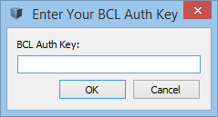
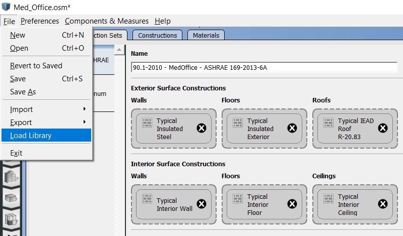

Installation and Introductory Tutorial
This page walks you through installing OpenStudio, the basics of the applications, and the basic workflow.
Installation Instructions
OpenStudio is supported on 64-bit versions of Windows 7 – Windows 10, OS X 10.12 – 10.14, and Ubuntu 18.04. OpenStudio supports the latest EnergyPlus release which is bundled with the OpenStudio installer. The version compatibility matrix lists specific versions of EnergyPlus and other dependencies for each version of OpenStudio.
Installation Steps
Download and install OpenStudio
- Download the latest release of OpenStudio here.
- Choose the installer that matches your operating system. The OpenStudio package contains the following components:
- OpenStudio Application
- EnergyPlus
- Ruby API
- C# API
- Command Line Interface
- Radiance
- Application Resources
Optional - Download and install SketchUp and the Openstudio SketchUp Plugin
There are a few options for generating geometry for the OpenStudio Application, including the built-in FloorspaceJS interface. One option is to use the OpenStudio Sketchup Plugin. To use the pugin:
- Download and install SketchUp. Presently, the OpenStudio SketchUp Plugin requires SketchUp 2019 Pro (not available for Linux).
- Download the OpenStudio SketchUp Plugin here. Follow the procedure to install the Plugin.
Optional - Setup a Building Component Library (BCL) Account
BCL content can now be accessed from within the OpenStudio SketchUp Plugin and from the standalone OpenStudio application. To take advantage of this integration, you will need to follow the steps outlined here to request a BCL key.
- Login to Building Component Library (BCL). Create an account if you don't have one. Follow the instructions from the email sent to you upon registration and then login.
- Click on the
My Dashboardnear the top right of the website. - Copy the text after
API v1.1 key: then paste the key into the OpenStudio application, or the SketchUp Plugin. You only need to configure the key in one place and it will be used globally throughout the OpenStudio tools. Additionally, this key will be maintained when you install updates to OpenStudio.
Enter the key through the OpenStudio SketchUp Plugin under the menu Extensions->OpenStudio User Scripts->Building Component Library->Setup BCL Key and click OK. Or register the key through the OpenStudio Application under the menu Components & Measures->Find Components. If a key is not already registered, it will prompt you for one.

Optional - Install Parametric Analysis Tool (PAT)
- Download the latest release of PAT here (not available for Linux).
Workflow Overview
The typical OpenStudio workflow is shown in the diagram below.
{kind=link}
About: Click on the diagram above to view a larger version.
Data Viewer is used to view simulation results. The section within documentation for Running Simulation & Viewing Results has information on using Data Viewer.
The Parametric Analysis Tool Interface Guide provides an introduction to the interface and workflow for creating multiple design alternatives from a seed model.
Introductory Tutorial
The tutorial below was created before the grid view was added to the Space Types and Thermal Zones tabs. Grid view allows you to view and edit more than one space type or thermal zone at a time. Go to the OpenStudio Application Interface Guide to learn more about grid view.
Selecting a Library for Constructions, Loads, and Schedules
Libraries that are included with the OpenStudio Application contain data for constructions, loads, and schedules for 6 vintages across all U.S. climate zones. They also contain data for 9 vintages specific to DEER. The Libraries do not contain any geometry. Load libraries by using the menu under File/Load Library. Then select your vintage from the default file set. The Library data is organized such that you can access specific Constructions and Loads or you can apply Construction Sets and Space Types that contain whole packages of subsequent dependent characteristics. For example a Library Space Type contains several specific Loads and associated Schedules for that space type, all of whhich become part of your model if you add the Space Type to your model. You can also load previously generated models as Libraries through the File/Load Library menu by navigating to any OSM file from the browser window that pops up. It can take a few minutes to load.

Above: Load a new Library using the menu.
It is a good practice to regularly clear the Libraries that load when the OpenStudio Application opens by using the menu under Preferences/Change Default Libraries and selecting Restore Defaults. If the OpenStudio Application is loading several Libraries it will slow down significantly.

Vintages:
- DOE reference (Pre-1980, 1980-2004)
- ASHRAE standard (189.1-2009, 90.1-2004, 90.1-2007, 90.1-2010, 90.1-2013)
- DEER (pre-1975, 1985, 1996, 2003, 2007, 2011, 2014, 2015, 2017)
Climate Zones: 1 - 8

FloorspaceJS - Building Envelope
For additional information on the integrated FloorspaceJS interface, go to the FloorspaceJS Interface Guide
SketchUp Plugin - Building Envelope
For additional information on the SketchUp Plugin interface, go to the OpenStudio SketchUp Plugin Interface Guide.